Levi Crown
@Levi-crown on GitHub
Full-stack developer with a curious mind. I build, break, debug, and learn.
Every mistake teaches me something, and every project gives me a reason to keep exploring.
$ open github.com/Levi-crown



## what I work with
- Languages: Python, Java, Kotlin, Dart, C#, PHP, JavaScript, Bash, PowerShell
- Frontend: HTML, CSS, React, Tailwind CSS
- Backend: Laravel, Django, Flask
- Cloud: Firebase, Supabase, Vercel
- Databases: MySQL, SQL Server, Oracle, SQLite, MongoDB
- Android: Android apps, AOSP, custom ROMs, Magisk modules, Termux
- IoT: ESP32, ESP32-CAM, ESP8266, Arduino, Raspberry Pi, MQTT
- ML and computer vision: OpenCV, MediaPipe, NumPy
- Security: Burp Suite, Metasploit, sqlmap, Nmap, Wireshark, on my own gear or with permission
- Operating systems: Kali Linux, BlackArch, Parrot OS, Windows, Windows Server
- Tools: Visual Studio Code, Visual Studio, Android Studio, PlatformIO, Figma, Cisco Packet Tracer
- AI tools: Claude, Codex, Hermes, Kimi
- Certificates: Cisco Ethical Hacker, Cisco Endpoint Security